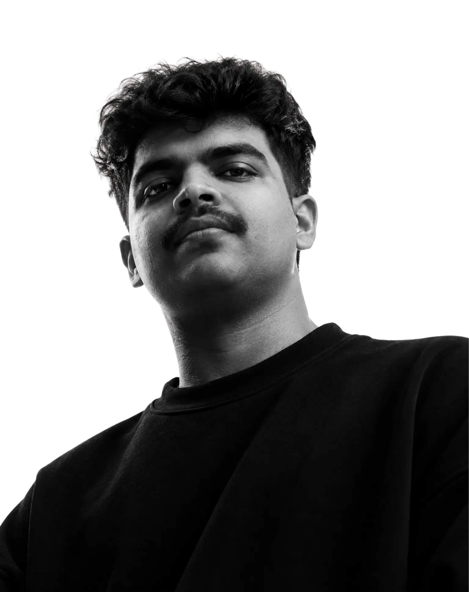
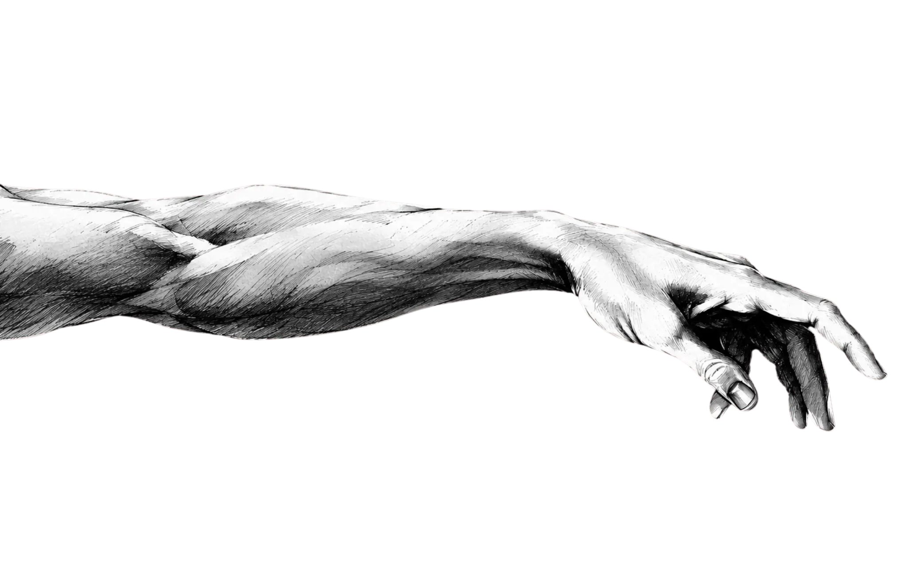
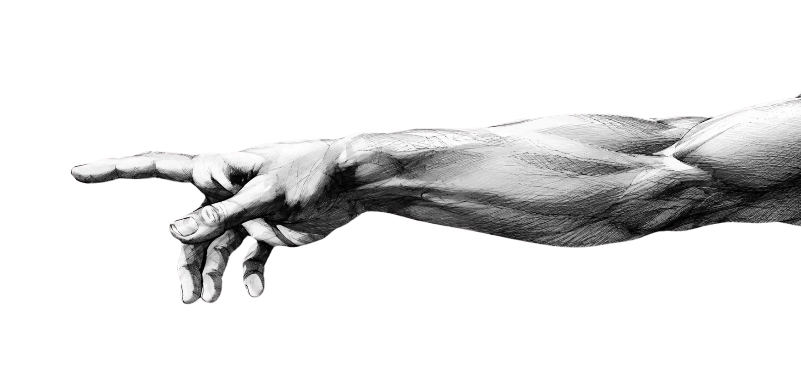

02
Forenexa
Storefront architecture designed around physical hardware and a focused shopping experience.

Creative developer exploring the space between thoughtful design, useful technology and visual storytelling.
I build considered digital experiences where visual identity and interaction work together, not against each other.
My interests span UI/UX design, front-end experiences, generative AI workflows and creative direction. I’m interested in making digital products feel as intentional as they are functional.
Explore selected work ↗From choice to discovery, the apple became a symbol of the moment knowledge changes everything.
Newton made it a story about asking why. Apple made it a symbol of technology reshaping everyday life.
I want to build the next kind of apple: a small idea with the power to begin a bigger change.



The hands never need to meet the apple. The space between them is the point: possibility, tension, and the moment before an idea becomes something real.
Projects and experiments across knowledge systems, web infrastructure and local AI.
A personal knowledge system connecting ideas across science, code and structured notes.
Storefront architecture designed around physical hardware and a focused shopping experience.
Exploring how local AI models can connect to clean, responsive frontend interfaces.
A personal journaling space for notes, memories and reflection, designed around privacy.
A browser-based tool for arranging images and exporting them as a polished PDF.
I’m Nithan Najeeb, a B.Com student at MES College in Kerala, India, exploring the space between thoughtful design, practical technology and visual storytelling.
I enjoy understanding how systems work and turning ideas into useful things, from web interfaces and structured knowledge tools to experiments with locally run AI models. My approach is to stay curious, build deliberately and keep improving the details.
A growing toolkit across design, development and visual communication.
Information hierarchy, layout systems, responsive interfaces and interaction thinking.
Turning visual concepts into clean, responsive pages with purposeful motion.
Prompt engineering, reference-led image creation and iterative visual direction.
Art direction, cinematic concepts, typography and personal brand expression.
Open to thoughtful collaborations, creative experiments and opportunities to learn by building.
Connect on LinkedIn